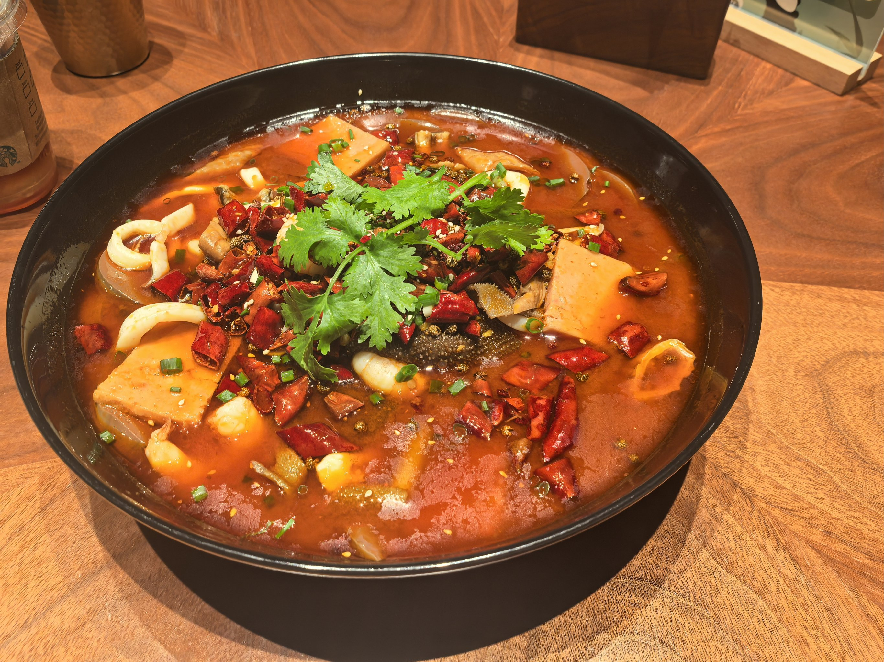
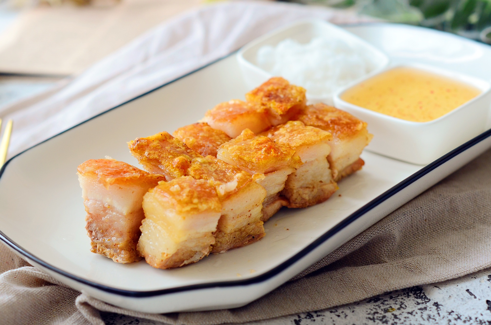
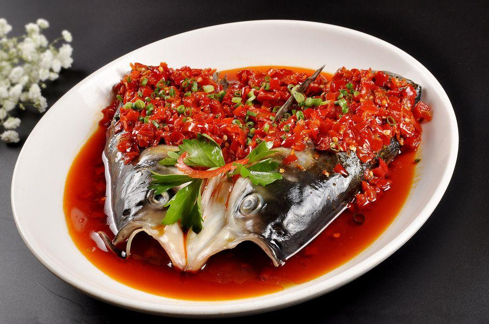

CHUAN Cusine
🌶 Mao Xie Wang
The one in the picture, its mainly even put some ingredients that can absorb the soup in a spicy and fragrant oil soup. This will make you want to eat more rice. The main ingredients are tripe, duck blood, bean sprouts, luncheon meat, cilantro, peppercorns, pork intestines, chili peppers and so on.
There are 40 kinds of cooking techniques in Sichuan cuisine, including pan-frying, stir-frying, oil dripping and crispy frying. Flavors such as spicy, fish flavor, and strange flavor are its prominent features.
Cantonese cuisine
Cui Pi Shao Rou
It is a famous and delicious Cantonese traditional dish. During Qingming Festival for tomb sweeping, every family will bring a large piece of roasted pork to worship ancestors. The main ingredients are, five-flower brisket, rosewater, five-spice powder and coarse salt.
Xiang Cusine
Duo Jiao Yu Tou
The reason this is a very spicy dish is because his chili is very hot, this chili is not on the tongue but in the throat. After a little while it's like having a lot of pins and needles stuck in there. The broth can also be a little spicy but it's much weaker than eating the chili directly. The main ingredients include bighead carp head, chopped pepper as the main ingredient, with soy sauce, ginger, green onion, garlic and other auxiliary ingredients.
Hunan cuisine, also known as Xiang cuisine, is one of China's eight major Han Chinese culinary traditions with a long history, originating in the Han Dynasty. It is based on three regional styles: the Xiang River basin, Dongting Lake area, and the mountainous regions of western Hunan.